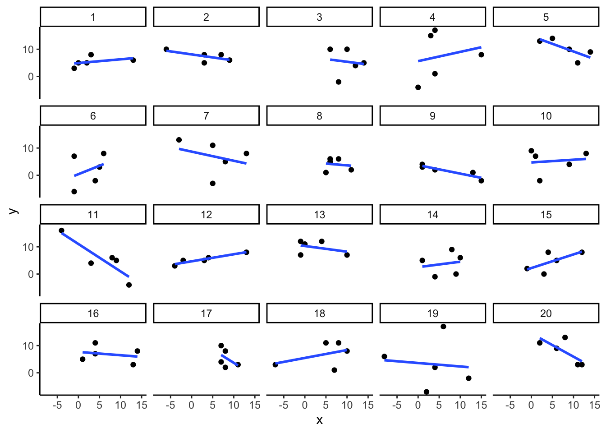
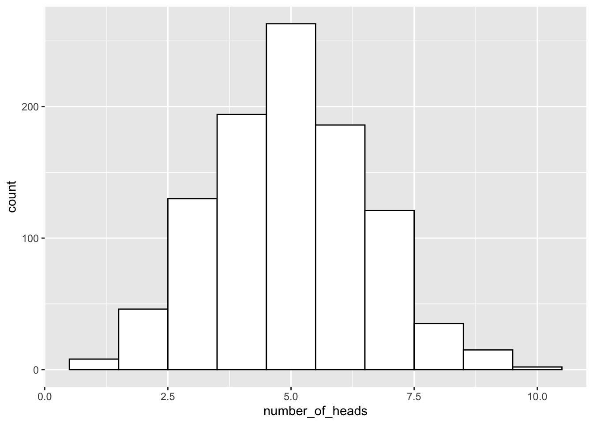
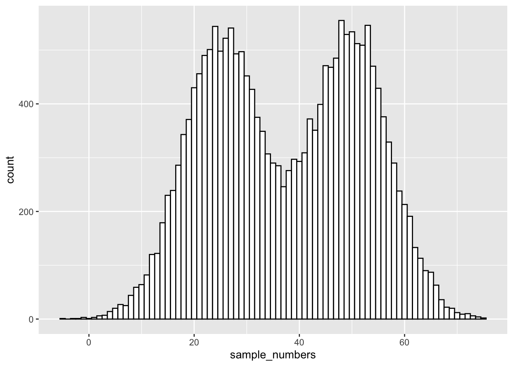
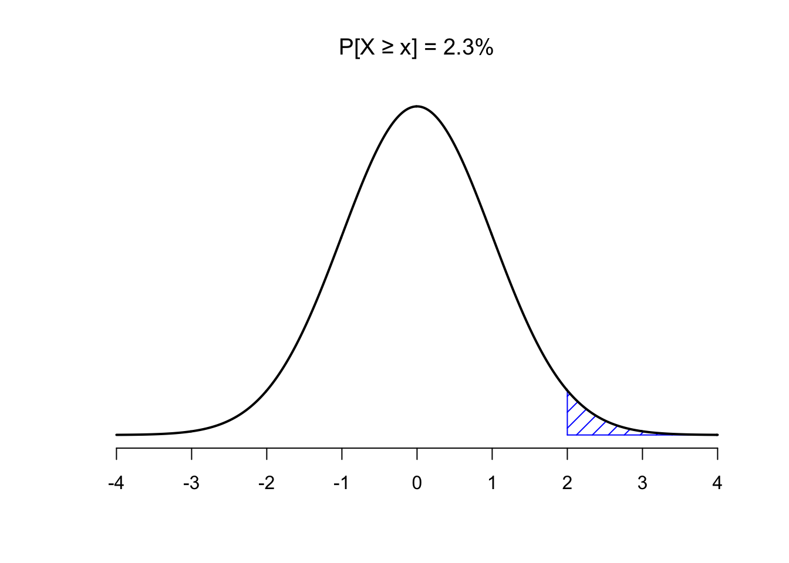

4 Week 4: Chance and Probability Theory
In the textbook we learned that we can find correlations by chance alone, even when there is no true correlation between two variables. During the first part of this lab we are going to explore this phenomenon further. We will generate some random data and then look at the correlations we calculate from random data. This will serve to develop our intuitions about inferential statistics; the focus of the remainder of this course. In the second part of the lab we are going to dive deeper in generating simulated data, which is very useful in helping us understand real data, and calculate all sorts of things about probability distributions.
To get started, download the lab template here (right click: save as) or from Canvas. Copy the lab template to your lab folder and double click the Lab project file (not the .Rmd) to open RStudio.
4.1 Learning goals
During this lab you will do the following:
- Explore correlations and random chance
- Learn how to generate simulated data in R
- Calculate and work with z-scores in R
4.2 Correlation and random chance
We saw in the textbook, that we can find correlations by chance alone, even when there is no true correlation between the variables. For example, suppose we randomly sampled some numbers into x and y. We know they shouldn’t be related, because we randomly sampled the numbers. However, chance alone will sometimes create correlations between x and y. You can demonstrate this to yourself by using the code below. Let’s look at 20 “experiments,” with 5 random numbers for x and y each.
library(tidyverse)
x<-round(rnorm(5*20,5,5)) # rnorm draws random numbers from a normal distribution
y<-round(rnorm(5*20,5,5))
conditions<-rep(1:20, each=5)
# put data in data.frame
all_df <- data.frame(conditions, x, y)
# plot 20 scatterplots with best fit line
ggplot(all_df, aes(x=x,y=y))+
geom_point()+
geom_smooth(method=lm, se=FALSE)+
facet_wrap(~conditions)+
theme_classic()
You can see that the slope of the blue line is not always flat. Sometimes it looks like there is a correlation, when we know in fact the data is completely random. You can keep re-doing this graph, by re-knitting your RMarkdown document, or by pressing the little green play button. This is basically you simulating 20 experiments each time you press the button. Complete the chance exercises below in your RMarkdown template.
4.2.1 Chance exercises
For the first two exercises, you will be sampling random numbers from a normal distribution a 1000 times. We provide some hints and example code two answer the exercises below.
- Estimate the range (minimum and maximum) of correlations that could occur by chance between two normally distributed random variables with n = 10.
- Estimate the range (minimum and maximum) of correlations that could occur by chance between two normally distributed random variables with n = 25.
Hint: to estimate the range of correlations that chance can produce we randomly sample x and y many times (like in the first example), save the correlation between x and y each time, then look at the smallest and largest correlation. How can you do this programmatically, without having to press the ‘play’ button hundreds of times?
The answer is using a for loop. The code below shows how to repeat everything inside the for loop 5 times. The variable i is an index, that goes from 1 to 5. The saved_value variable starts out as an empty variable, and then we put a value into it (at index position i, from 1 to 5). In this code, we put the sum of the products of x and y into the saved_value variable. At the end of the simulation, the saved_value variable contains 5 numbers. The min() and max() functions are used to find the minimum and maximum values for each of the 5 simulations. Modify the following code to answer question 1 and 2.
saved_value <- c() # create empty variable
for (i in 1:5) { # loop over code between {} 5 times
x <- rnorm(n=10, mean=0, sd=5) # generate normally distributed random variables
y <- rnorm(n=10, mean=0, sd=5)
saved_value[i] <- sum(x*y) # save the sum of the product of x*y in saved_value
}
min_value <- min(saved_value)
max_value <- max(saved_value)
print(min_value)## [1] -118.9097print(max_value)## [1] 65.00331What proportion of simulated correlations (from question 1 and 2) is smaller than -0.3 and larger than +0.3 for n = 10 and n = 25? To calculate the proportion use the smaller than (
<) and greater than (>) operators on your vector of correlations like so:mean(saved_value < 0.3)The histogram below shows the correlations produced by random chance for n = 10. The red lines are set at -0.3 and +0.3. The text indicates the proportion of correlations outside the red lines. Try to recreate the histogram below as closely as possible for n = 25.
Remember, programming is an iterative process, you almost never get to the solution in the first go. Make liberal use of the help function in R, Google, the tidyverse website and/or the cheatsheets and ask help from your classmates / the tutor when stuck. There are multiple ways to get to the plot below.

After completing these exercises, continue the lab by reading Section 4.3.
4.3 Generating data with sample() and binom()
There are many ways to make R generate numbers for you. We already used normal distribution to generate numbers for our random correlations. In this next part, we will explore additional functions and distributions to generate random numbers and look at rnorm() in more detail.
4.3.1 sample()
The sample function is like an endless gumball machine. You put the gumballs inside with different properties, say As and Bs, and then you let sample endlessly take gumballs out. Check it out:
gumballs <- c("A","B")
sample_of_gumballs <-sample(gumballs, 10, replace=TRUE)
sample_of_gumballs## [1] "A" "A" "A" "A" "A" "B" "A" "A" "B" "A"Here the sample function randomly picks A or B each time. We set it do this 10 times, so our sample has 10 things in it. We set replace=TRUE so that after each sample, we put the item back into the gumball machine and start again. Here’s another example with numbers:
some_numbers <- c(1,2,3,4,5,5,5,5)
sample_of_numbers <-sample(some_numbers, 20, replace=TRUE)
sample_of_numbers## [1] 5 5 5 3 5 5 5 3 5 5 5 5 2 5 4 4 4 3 5 5Let’s do one more thing with sample. Let’s sample 1000 times from our some_numbers variable, and then look at the histogram:
some_numbers <- c(1,2,3,4,5,5,5,5)
sample_of_numbers <-sample(some_numbers, 1000, replace=TRUE)
sample_df <- data.frame(sample_of_numbers)
ggplot(sample_df,aes(x=sample_of_numbers)) +
geom_histogram()
We are looking at lots of samples from our little gumball machine of numbers. Notice that as we put more 5s in, more 5s come out of in our big sample of 1000.
4.3.2 rbinom()
You can think of the binomial distribution as a coin flipping distribution. Or dice roll distribution. Or anything you can define a number of “successes” for. For example, when flipping a coin, we could consider flipping heads a “success.”
You use rbinom as follows: rbinom(n, size, prob). n gives the number of flips you want to make. size is the number of coins you want to flip at once. prob is the probability that defines how often a “success” happens. Here’s how we flip one coin 10 times using rbinom (assuming the coin is fair):
coin_flips <- rbinom(10,1,.5)
coin_flips## [1] 1 0 1 0 1 1 0 1 0 0We get a bunch of 0s, and 1s. We can pretend 0 = tails, and 1 = heads. If you flip 10 coins, how many heads do you get? We can can do the above again, and then sum(coin_flips).
coin_flips <- rbinom(10,1,.5)
sum(coin_flips)## [1] 6Alright, so we get the sum of the 1s (i.e. the successes), which tells us the number of heads. But, if you keep redoing the above, you’ll get different answers each time. 5 heads will be the most frequent answer, but you will get lots of other answers too.
We could do this 1000 times over, saving the number of heads for each set of 10 flips. Then we could look at the distribution of those sums. That would tell us about the range of things that can happen when we flip a coin 10 times. We can do that in a for loop like this:
number_of_heads<-length(1000) # make an empty variable to save things in
for(i in 1:1000){
number_of_heads[i] <- sum(rbinom(10,1,.5))
}
heads_df <- data.frame(number_of_heads)
ggplot(heads_df,aes(x=number_of_heads)) +
geom_histogram(binwidth=1,fill="white",color="black") 
The histogram shows us the frequency observing different numbers of heads (for 10 flips) across the 1000 simulations. 5 happens the most, but 2 happens sometimes, and so does 8. All of the possibilities seem to happen sometimes, some more than others.
4.3.3 sample and binom() exercises
- Why are you unable to run the following bit of code? What could you do to fix this? Does this change the nature of your sampling procedure?
sample(c(1:10), 20)Simulate the amount of sixes you expect to roll when rolling 1 dice 10,000 times. Also simulate the amount of fives and sixes you expect to roll when rolling 10 dice 10,000 times? (hint: use
rbinom()to simulate 10,000 dice rolls andsum()to calculate the amount of successes)What is the probability of obtaining exactly 4 heads when flipping 10 fair coins? And what is the probability to obtain at most 4 heads (so 0, 1, 2, 3, or 4 heads)? Cf. the textbook when unsure how to use the
binom()functions.What is the probability to obtain at least 4 heads (so 4, 5, 6, 7, 8, 9, or 10 heads) when flipping 10 fair coins? You can calculate this probability in two ways, either by using
pbinom()with an additional argument, or by using your answers from question 3.
4.4 Normal distribution
4.4.1 rnorm()
You can use rnorm() to sample numbers from a normal distribution. It’s similar to rbinom(), but now you are sampling from a normal distribution instead:
sample_numbers <- rnorm(10000,0,1) # sample n = 10,000 numbers with mean = 0 and sd=1
sample_df <- data.frame(sample_numbers)
ggplot(sample_df,aes(x=sample_numbers)) +
geom_histogram(binwidth=0.1,fill="white",color="black") 
There it is, a bell-shaped normal distribution with a mean of 0, and a standard deviation of 1. Just by changing the arguments of the rnorm() function, you can sample numbers from normal distributions with any mean or standard deviation.
The nice thing about R functions is that they are a bit like Legos, you can put them together and come up with different things. What if wanted to sample from a distribution that looked like a two-humped camel’s back? Just sample from rnorm twice like this… mix away.
sample_numbers <- ( c( rnorm(10000,25,7.5), rnorm(10000,50,7.5)) )
sample_df <- data.frame(sample_numbers)
ggplot(sample_df,aes(x=sample_numbers)) +
geom_histogram(binwidth=1,fill="white",color="black")  You can generate as many numbers under a certain distribution as your computer can handle.
4.4.2 Graphing the normal distribution
“Wait, I thought we already graphed a normal distribution.” We sort of did. We sampled numbers and made histograms that looked like a normal distribution. But, a normal distribution is more of an abstract idea. It looks like this in the abstract:
normal_dist <- dnorm(seq(-4,4,.1), 0, 1)
values <-seq(-4,4,.1)
normal_df <-data.frame(values,normal_dist)
ggplot(normal_df, aes(x=values,y=normal_dist))+
geom_line()+
theme_classic()
A really nice shaped bell-like thing. This normal distribution has a mean of 0, and standard deviation of 1. The heights of the lines tell you roughly how likely each value is. Notice, it is centered on 0 (most likely that numbers from this distribution will be near 0), and it goes down as numbers get bigger or smaller (so bigger or smaller numbers get less likely). Notice the values don’t go much beyond -4 and +4. This is because those values don’t happen very often. Theoretically any value could happen, but really big or small values have really low probabilities.
4.4.3 Calculating the probability of specific ranges.
We can use R to tell us about the probability of getting numbers in a certain range. For example, when you think about it, it should be obvious that you have a 50% probability of getting the number 0 or lower. Half of the distribution is 0 or lower, so you have a 50% probability.
We can use the pnorm() function to confirm this:
pnorm(0, mean = 0, sd= 1)## [1] 0.5Agreed, pnorm() tells us the probability of getting 0 or lower is 0.5.
Well, what is the probability of getting a 2 or greater? That’s a bit harder to judge, but obviously less than 50%. Use R like this to find out:
pnorm(2, mean = 0, sd= 1)## [1] 0.9772499That doesn’t seem quite right. R is telling us the probability is 0.977, while we know it should be smaller than 0.5. That’s because by default, pnorm() gives the probability “up to and including” (denoted: P[X ≤ x]). The figure below visualizes what that means:
So, to get the probability of getting a 2 or greater, we have to take \(1 - 0.9772499 = 0.0227501\):

Or, we could use the lower.tail argument:
pnorm(2, mean = 0, sd= 1,lower.tail = FALSE)## [1] 0.02275013So, the probability of getting a 2 or greater is .0227 (not very probable)
4.4.4 norm() exercises
Complete the following exercises in your RMarkdown template.
Run the following bit of code, which samples 20 random numbers from a normal distribution, a couple of times and look at the results.
- What do you think the function
set.seed()does? When do you think this could be useful?
set.seed(123)
some_numbers <- rnorm(20,50,25) # 20 numbers, mean = 50, s.d. = 25
print(some_numbers)## [1] 35.9881088 44.2455628 88.9677079 51.7627098 53.2321934 92.8766247
## [7] 61.5229051 18.3734691 32.8286787 38.8584507 80.6020449 58.9953457
## [13] 60.0192863 52.7670679 36.1039716 94.6728284 62.4462620 0.8345711
## [19] 67.5338975 38.1802148Suppose the mean of a normal distribution is 25 (\(\mu = 25\)) and the standard deviation is 3 (\(\sigma=3\)). Calculate the probability of obtaining a value between 22 and 28 using R. (hint:
pnorm())Based on what you know about the standard normal distribution, could you answer question 2 without calculations?
Use R to calculate the probability of obtaining a value higher than 29.5 for the normal distribution with \(\mu = 25\) and \(\sigma=3\). (hint:
pnorm())
Continue the lab by reading section 4.5 of the lab manual.
4.5 z-scores
A normal distribution with mean = 0 and the standard deviation = 1 is called the standard normal distribution. Often, we are not dealing with a normal distribution exactly like this.
For example, someone might say, I got a number, it’s 545. It came from a normal distribution with mean = 600, and standard deviation = 25. Does the number 545 happen a lot or not? The numbers don’t tell you right away. But if we were talking about the standard normal distribution with mean = 0 and standard deviation = 1, and I told I got a number -2.2 from that distribution, you would know directly that -2.2 doesn’t happen a lot.
z-scores are a way of transforming one set of numbers into the standard normal distribution. To calculate z-scores we take the following steps:
- First get some numbers:
some_numbers <- rnorm(20,50,25) # 20 numbers, mean = 50, s.d. = 25- Calculate the mean and standard deviation:
my_mean <- mean(some_numbers)
my_sd <-sd(some_numbers)
print(my_mean)## [1] 48.71857print(my_sd)## [1] 20.74847- Subtract the mean from your numbers:
differences<-some_numbers-my_mean
print(differences)## [1] -25.4141636 -4.1679438 -24.3686822 -16.9408517 -14.3445527 -40.8859037
## [7] 22.2261051 5.1157570 -27.1719944 32.6268021 11.9430346 -6.0953580
## [13] 23.6595706 23.2347662 21.8209561 18.4974354 15.1293704 -0.2663637
## [19] -6.3676376 -8.2303460- Divide each number by the standard deviation:
z_scores<-differences/my_sd
print(z_scores)## [1] -1.22486947 -0.20087961 -1.17448110 -0.81648691 -0.69135482 -1.97055060
## [7] 1.07121675 0.24656072 -1.30959047 1.57249219 0.57561046 -0.29377390
## [13] 1.14030452 1.11983051 1.05169005 0.89150854 0.72918016 -0.01283775
## [19] -0.30689677 -0.39667249Done. Now you have converted your original numbers into what we call standardized scores (or z-scores). They are standardized to have the same (assumed) properties of a normal distribution with mean = 0, and standard deviation = 1.
4.5.1 z-score exercises
Complete the following exercises in your RMarkdown template.
Right click and download this SPSS file containing 49 students’ exam grades (let’s say it’s the final exam for a statistics class). You have likely never worked with an SPSS (.sav) file before, but luckily a library that can load SPSS files was installed when installing the tidyverse. To load this package (it is not loaded by default with library(tidyverse)), use library(haven). Make sure the .sav is in your lab directory so you can load it into R.
Once you have successfully loaded the data into R:
- Create a table containing the mean and standard deviation for this sample of scores. Also produce a histogram of the grades. How does the distribution of grades look when you plot your histogram with a binwidth of 5?
- Transform each student’s score into a Z-score. Now, plot the frequency histogram of this Z-score distribution with a binwidth of 0.5. Compare it to the raw score distribution. How are they the same? How are they different?
- Imagine you are a student in this class who received a 90 on this exam. However, the Professor has decided to grade on a curve, such that only the top 10% of the class receives an A. Calculate the z-score that corresponds to a raw score of 90 on this exam. Will you get an A with this grade? Why or why not?
When you have completed all exercises and are happy with your progress today, please knit your document and submit it to Canvas. If you finish before the time is up, start with the required readings of Week 5, work on your assignment, or help out your fellow students.